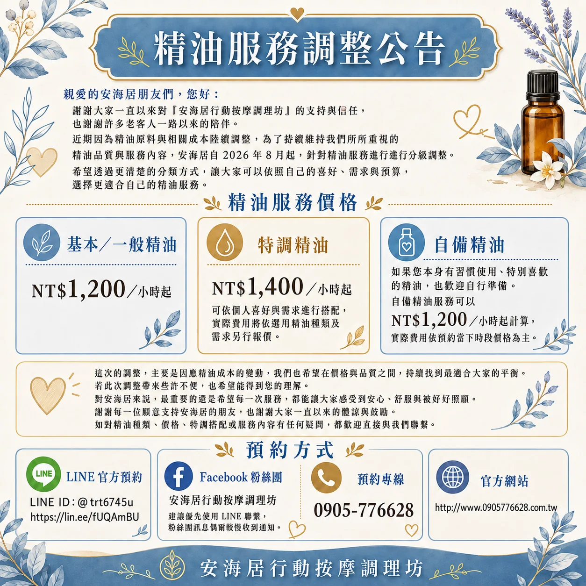
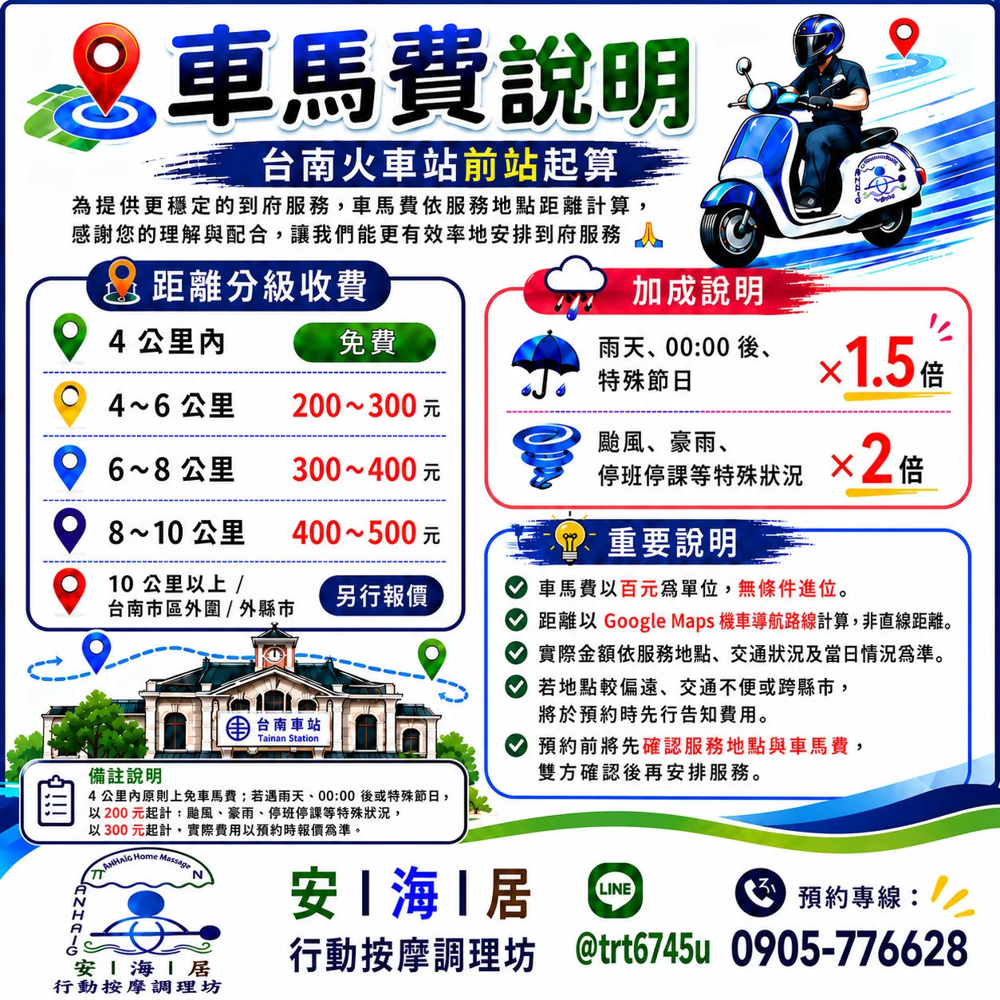

Pricing
價格、精油與車馬費
這一頁把費用邏輯說清楚：基本時段價格、精油服務、車馬費，以及晚間與特殊情況的加成。不是最花俏，但會是顧客真正會反覆查看的一頁。
Outcall Rate
到府按摩時段價格
以下為時段服務費，不含車馬費、精油與其他指定項目。
一般時段
NT$1,000 ／小時起
10:00–21:00，多數預約以此時段為主。
晚間
NT$1,100 ／小時起
21:00–23:00，建議提前預約。
深夜
NT$1,200 ／小時起
23:00–00:00，依行程與安全評估安排。
晚上 9 點後需提前預約；若未接電話或未讀訊息，可能代表服務中或當日已無法安排。
Aroma Rate
精油服務
精油類服務以 115 年 8 月公告為優先版本。若客戶有偏好的香氣、保養品牌或自備精油需求，也可以在預約時一併告知。
基本／一般精油
NT$1,200 ／小時起
特調精油
NT$1,400 ／小時起
自備精油
NT$1,200 ／小時起
- 特調精油依實際需求與使用內容報價
- 可於預約時說明喜好或過敏情況
- 最終價格仍需併同時段與車馬費確認


Travel Fee
車馬費
以台南火車站前站為起點，依 Google Maps 的機車導航路線估算，不以直線距離計算。
4 公里內
免費
4–6 公里
NT$200–300
6–8 公里
NT$300–400
8–10 公里
NT$400–500
10 公里以上／台南市區外／外縣市
另行報價
車馬費以百元為單位、無條件進位。若為兩位師傅同時出勤，原則上依每位師傅一趟計算。
Special Case
特殊時段與天候加成
實際是否安排，仍會以安全、路況與雙方確認為主。
雨天／00:00 後／特殊節日
× 1.5
4 公里內原則免車馬費，但特殊情況下可能自 NT$200 起計。
颱風／豪雨／停班停課
× 2
新版公告備註：4 公里內特殊狀況可自 NT$300 起計。
指定與設備
預約時確認
指定師傅、按摩床、趴趴墊借用與其他設備需求，請於預約時先告知。
最終報價提醒：網站已盡量整合最新資料，但費用仍會因服務地點、交通、時段、師傅、精油、設備與特殊天候而調整，請以雙方預約確認內容為準。